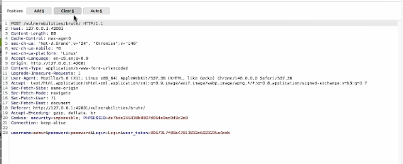
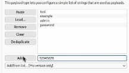
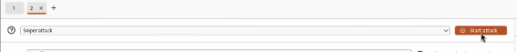
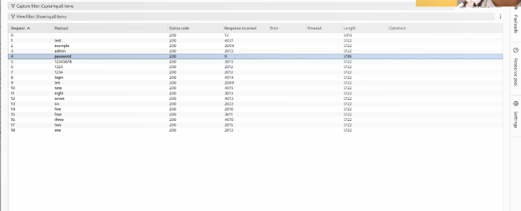

6.октябрь.2026
Изучить функциональные возможности Burp Suite как набора инструментов для тестирования безопасности веб-приложений и практически применить его для анализа и автоматизированного подбора учётных данных формы аутентификации DVWA с помощью модуля Intruder.
Burp Suite — это интегрированная платформа для тестирования безопасности веб-приложений, разработанная компанией PortSwigger. Она представляет собой набор мощных инструментов, которые демонстрируют реальные возможности злоумышленника, проникающего в веб-приложения, и позволяют безопасно исследовать их поведение в контролируемой среде.
| Компонент | Назначение |
|---|---|
| Proxy | Перехватывает и позволяет модифицировать HTTP/HTTPS-трафик между браузером и сервером |
| Intruder | Автоматизирует атаки перебором (brute-force, fuzzing, enumeration) |
| Repeater | Позволяет вручную изменять и повторно отправлять отдельные запросы |
| Decoder | Кодирует и декодирует данные в различных форматах (URL, Base64, hex) |
| Comparer | Сравнивает два запроса или ответа на предмет различий |
| Sequencer | Анализирует случайность токенов сессии |
| Режим | Описание |
|---|---|
| Sniper | Одна позиция, один список полезных нагрузок. Классический перебор |
| Battering ram | Одна полезная нагрузка подставляется во все позиции одновременно |
| Pitchfork | Несколько позиций, несколько списков, подстановка параллельно |
| Cluster bomb | Несколько позиций, несколько списков, перебор всех комбинаций |
Burp Suite существует в двух основных редакциях:
В данной лабораторной работе используется Community Edition, о чём Burp выводит соответствующее предупреждение при запуске Intruder.
В веб-интерфейсе DVWA переходим по адресу
http://127.0.0.1:42001/vulnerabilities/brute/. Отображается
форма входа с полями «Username» и «Password» и кнопкой «Login». Уровень
безопасности установлен в Low.
Рис. 1 — Страница Brute Force в DVWA
В главном окне Burp Suite на вкладке Proxy →
HTTP history находим POST-запрос к
/vulnerabilities/brute/. Нажимаем правой кнопкой мыши на
запрос и выбираем Send to Repeater (или используем
сочетание клавиш Ctrl+R).
Это позволяет вынести запрос в отдельный модуль для детального анализа и дальнейшей работы с ним.

Рис. 2 — Контекстное меню с опцией Send to Repeater
Открываем вкладку Repeater. В окне запроса видим полную структуру POST-запроса:
POST/vulnerabilities/brute/HTTP/1.1Host: 127.0.0.1:42001,
Content-Type: application/x-www-form-urlencoded,
Cookie: PHPSESSID=...; security=lowusername=admin&password=admin&Login=Login&user_token=...Важно отметить, что в запросе присутствует токен
CSRF (user_token), который DVWA генерирует для
защиты от подделки запросов. На уровне безопасности Low он не мешает
атаке, но при более высоких уровнях может потребоваться его
обновление.

Рис. 3 — Структура POST-запроса в Repeater
Из окна Repeater нажимаем правой кнопкой мыши на запрос и выбираем Send to Intruder (или Ctrl+I). Запрос переносится в модуль Intruder для подготовки автоматизированной атаки.

Рис. 4 — Передача запроса в Intruder
Переходим на вкладку Intruder →
Positions. По умолчанию Burp автоматически расставляет
маркеры § вокруг нескольких значений. Нажимаем кнопку
Clear § для удаления всех автоматических маркеров.
Затем выделяем только значение параметра password в теле запроса и нажимаем кнопку Add §. В итоге строка запроса приобретает вид:
username=admin&password=§admin§&Login=Login&user_token=...Маркеры § указывают Burp, куда именно подставлять
полезные нагрузки из словаря.
Переходим на вкладку Payloads. Устанавливаем:
1Simple listВ поле Payload configuration вводим список паролей вручную. Для демонстрации используется небольшой набор:
test
example
admin
password
123456789
123456
1234
login
qwerty
abc
none
p@ssw0rd
secret
letmein
root
pass
admin
admin123Использование короткого списка позволяет наглядно показать работу Intruder без длительного ожидания, связанного с ограничениями Community Edition.

Рис. 5 — Настройка полезной нагрузки в Intruder
Убеждаемся, что тип атаки установлен в Sniper, и нажимаем оранжевую кнопку Start attack в правом верхнем углу.
Появляется всплывающее окно с предупреждением о том, что используется Community Edition, и скорость Intruder ограничена. Нажимаем OK — открывается отдельное окно с результатами атаки.

Рис. 6 — Кнопка Start attack
В окне результатов атаки отображается таблица со следующими столбцами:
| Столбец | Описание |
|---|---|
| Request | Номер запроса |
| Payload | Подставленное значение из словаря |
| Status code | HTTP-код ответа (200 — успешно) |
| Response received | Размер полученного ответа в байтах |
| Error | Признак ошибки (пусто при успехе) |
| Timeout | Признак таймаута |
| Length | Длина тела ответа |
Наблюдаем ключевую закономерность: все строки имеют
одинаковую длину 4722, кроме одной — строки с payload
password, длина которой равна
4710. Это различие в 12 байт указывает на то, что ответ
сервера отличается — именно этот запрос привёл к успешной
аутентификации.

Рис. 7 — Результаты атаки Intruder с выделенной успешной строкой
| Метрика | Значение |
|---|---|
| Целевой адрес | http://127.0.0.1:42001/vulnerabilities/brute/ |
| Метод запроса | POST |
| Тип атаки | Sniper |
| Количество полезных нагрузок | 18 |
| Найденный пароль | password |
| Длина успешного ответа | 4710 байт |
| Длина неуспешного ответа | 4722 байт |
В результатах атаки все запросы с неверными паролями возвращали ответ
длиной 4722 байта (страница с сообщением об ошибке
«Username and/or password incorrect»). Единственный запрос с payload
password вернул ответ длиной 4710
байт — это страница с приветствием пользователя
(Welcome to the password protected area), которая короче
страницы ошибки на 12 байт.
Такой подход — анализ длины ответа — является стандартной методикой при работе с Intruder, поскольку визуально ответы почти идентичны, но их размер выдаёт разницу в содержимом.
В отличие от Hydra, использованной в предыдущей лабораторной работе, Burp Suite Intruder предоставляет:
Однако Community Edition имеет существенное
ограничение — скорость около 1 запроса в секунду, что делает её
непригодной для перебора больших словарей вроде
rockyou.txt. В таких случаях лучше использовать Hydra или
Burp Professional.
Данная лабораторная работа продемонстрировала полный цикл работы с Burp Suite:
Эти навыки являются базовыми для любого пентестера и специалиста по безопасности веб-приложений.
В ходе индивидуального проекта № 5 был изучен и практически применён Burp Suite — комплексный инструмент для тестирования безопасности веб-приложений. С его помощью выполнена атака методом грубой силы на форму аутентификации DVWA с использованием модуля Intruder.
Освоены ключевые этапы работы:
§;В результате атаки был успешно определён корректный пароль
password — его ответ отличался по длине
(4710 байт против 4722 байт у неуспешных попыток). Это подтверждает
небезопасность слабых паролей и демонстрирует эффективность Burp Suite
Intruder как инструмента для автоматизированного тестирования форм
аутентификации.
Полученные навыки могут быть применены при аудите защищённости реальных веб-приложений, а также использованы в дальнейших лабораторных работах по эксплуатации уязвимостей (SQL-инъекции, XSS, CSRF).